High-Speed Quadcopter
A six person team at CWRU building a 3D printed quadcopter to fly a level pass at 500 km/h. I lead the mechanical design and the electronics, and I run the powertrain trade study, the CFD and the FEA.
500 km/h is our design target, not a record attempt. The Guinness record for a battery powered quadcopter is 657.59 km/h, set by Luke and Mike Bell in December 2025.
- 567 km/hpredicted top speed
- 243powertrains evaluated
- 2.49 kgmodeled weight
- 16printed parts
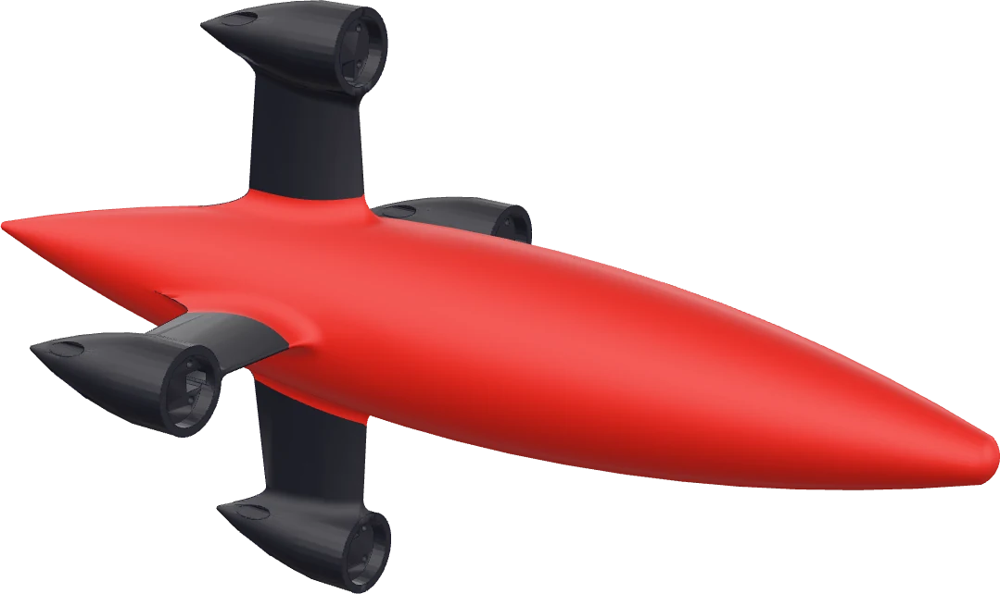
Built
Version 2, the 12S speed aircraft, has its printed shell, arms and nacelles assembled. Version 1 is a 6S quadcopter with 7 in props that the flight controller setup and tuning get proven on first.
Flown
Version 1, for about an hour in total. Version 2 has only made an attempted hover, so every speed and structural number for it on this page comes from a model.
Next
Move the electronics into the shell, and fly a notch filter for the vibration the version 1 logs turned up.
Printed airframe
The airframe is sixteen printed parts joined with heat set inserts and screws. I kept the number of different screw sizes low, weighed against how hard each part is to print.
Packaging decided the body size. Putting the ESCs in a ring around the body axis saved 64 mm of length and 36 g in CAD. Even then, the original 88 mm body only fit the battery at 652 mm long. Parametric studies showed that added length costs more drag than added diameter, so I widened the body to 93 mm instead.

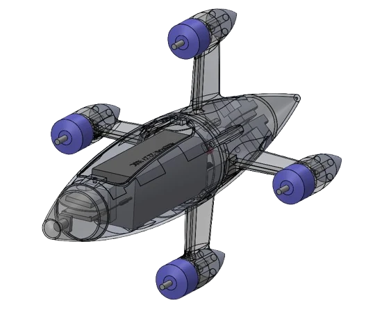

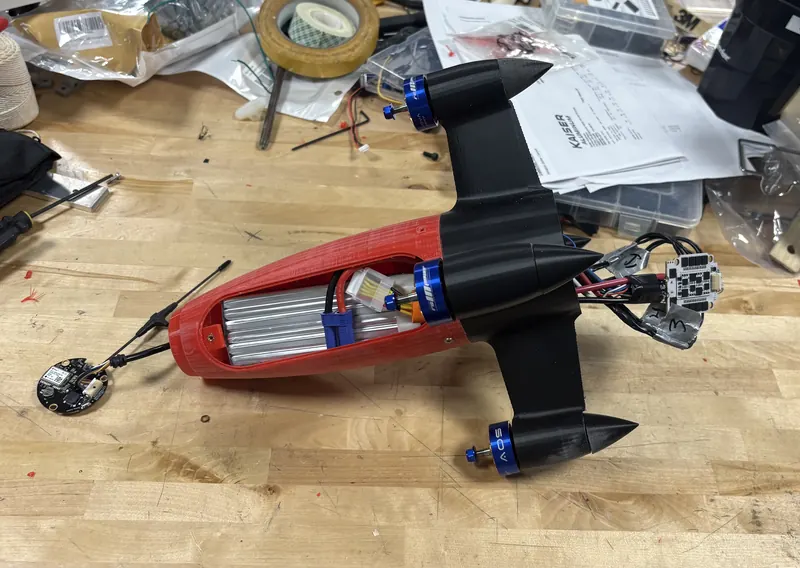
I printed four arm prototypes before the final one. The first pinched the motor wires, let the rotor rub, and left screw holes exposed to the flow. The final arm has a wider wire slot, a recess for the rotor and a cap that covers the screws.
Because I settled the arm first, the full shell printed once with no changes.

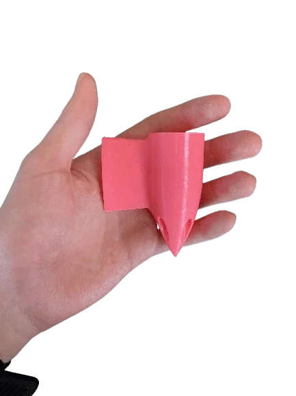

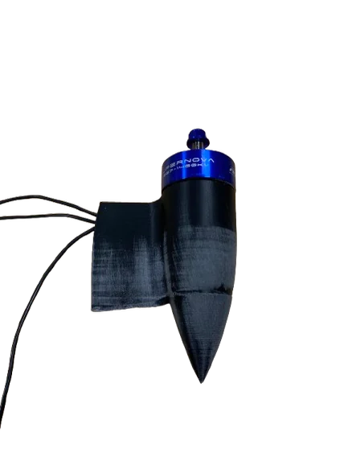
The nose cone is thermoformed from clear sheet over a mold I printed, so the camera can see out of the front.

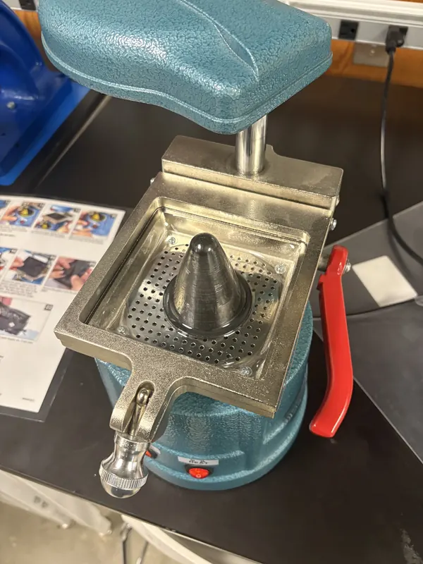
Electronics from first principles
Version 2, the 12S speed aircraft. Model numbers at the 550 km/h design point in 30 °C air. None of this has been measured in flight yet.
The propeller sets top speed
A propeller works like a screw. Each revolution moves it forward by its pitch, so the fastest it can pull the aircraft is pitch times revolutions per second.
APC rates its E series props to a structural limit of 145,000 RPM divided by the diameter in inches. Cut to 5.5 in, that is 26,364 RPM. I hold 95% of it, 25,045 RPM, or 417 revolutions per second. With a fitted pitch of 0.402 m, the pitch speed is 168 m/s, or 604 km/h.
The model reaches about 567 km/h, 94% of pitch speed. The 6% slip is small because the airframe is clean, so each prop only has to make about 5 N at the pass.
So the prop's RPM limit binds before motor power does. A 5 in cut would allow about 27,550 RPM and a 6 in cut about 22,960 RPM, and top speed would move with it.
Tip speed
The blade tip sees its own rotation and the forward speed at the same time. At the RPM cap the tip turns at 183 m/s while the aircraft moves at 158 m/s, so the tip meets the air at 242 m/s. The speed of sound at 30 °C is 349 m/s, which puts the tip at Mach 0.69.
Compressibility losses start to grow around Mach 0.7, so this is close to the edge. A cold day makes it worse, because the speed of sound drops with temperature.
Why 12S
A brushless motor turns voltage into speed and current into torque. No load speed is Kv times voltage, and the torque constant is Kt = 9.55 / Kv in N·m per amp. The two are reciprocal, so a motor can't have high speed per volt and high torque per amp at once.
The prop needs about 25,000 RPM. On 12S the pack holds about 42.8 V under load, so a 700 KV motor spins about 30,000 RPM unloaded, which leaves room for the drop under load. On 6S the voltage halves, so the motor would need about twice the Kv. That halves Kt, so every N·m of torque costs twice the current. Resistive loss goes as current squared, so the same wiring, connector and ESC would waste about four times the power.
Voltage sag
The pack reads 50.4 V fully charged with no load. At about 190 A it sags to about 42.8 V, and that is the voltage I size to. Sizing to 50.4 V would overpredict RPM by 18%.
Every milliohm in series counts at that current. One milliohm drops 0.19 V and wastes 36 W, so short, thick battery leads and a low resistance connector are worth real speed.
Battery
190 A from a 2800 mAh pack is about 68C. A 10 second pass only uses about 0.53 Ah, roughly 19% of the pack, so capacity isn't the limit during the pass. The limit is landing reserve after the cruise out and back, which is where the 1600 mAh packs failed in the trade study below.
Where the power goes
About 8.1 kW comes out of the pack (190 A at 42.8 V). About 3.1 kW leaves as drag power (20.5 N at 153 m/s). That is roughly 39% end to end. ESC, motor and prop losses multiply, and the prop is still accelerating the aircraft during the pass, so not all of the input goes into holding speed.
Drag grows with speed squared, so the power to overcome it grows with speed cubed. Going 10% faster takes 33% more power. On this aircraft that matters less than it sounds, because the prop limit binds first. In the model, a 16% drag increase only costs about 7 km/h.
Powertrain trade study
Model results.
I wrote a mission model in MATLAB and ran every combination of the candidate motors, ESCs, batteries and props through it, 243 in all. Each setup gets a predicted speed and a risk score based on how hard each part runs against its own ratings. The code and data are on GitHub at ChanceKrenzer/HSD-Mission-Model.

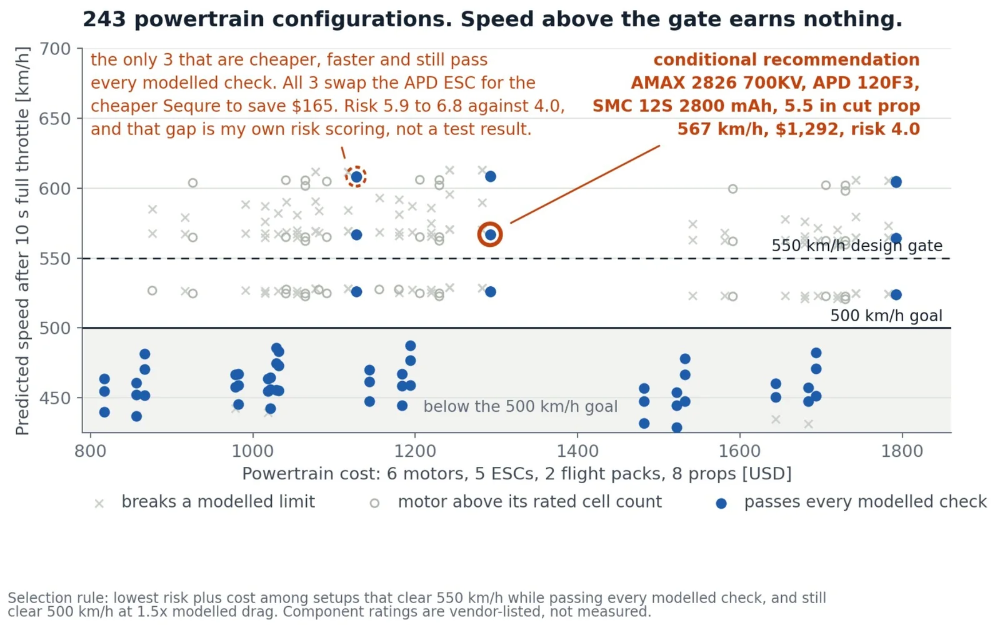
How setups are ranked
The pick is the setup with the lowest combined risk and cost that clears 550 km/h, passes every hard constraint, and still clears 500 km/h with 50% more drag than modeled. Running a motor above its rated cell count adds risk instead of ruling the setup out.
It overruled my first pick
My first choice of motor was $201 cheaper, but it ran at 90% of its current rating, 1.5 times its rated cell count and 128% of its peak rating at launch. The motor the model picked runs at 64% of its current rating and 50% of its power rating. The extra $201 buys that margin.

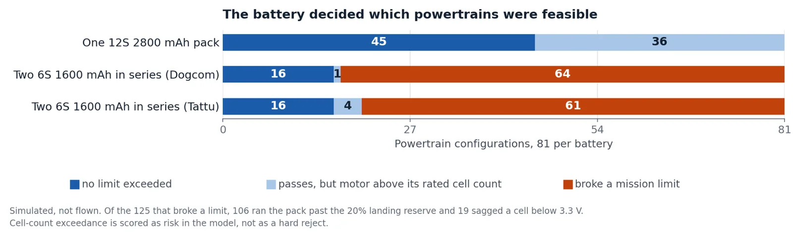
Still open
The motor's 12S rating comes from a vendor listing, not a datasheet, so the maker needs to confirm it before we buy. The ESC choice is my judgment, not a test result. I gave the cheaper Sequre ESC a 1.5 point risk penalty because I couldn't find a flight record for it, and that penalty, worth $375 at my own exchange rate between risk and cost, is what puts it behind. Neither ESC has been run yet.
The prop data comes from APC's published performance file, which is computed rather than measured in a wind tunnel. The trade study still uses the 88 mm body, so its speed and mass figures predate the resize to 93 mm.
Aerodynamics
Model results.
Capping the motors
I hadn't used SolidWorks Flow Simulation before this project, so I started by learning to set up a domain and mesh I could trust. One of the first changes it led to was capping the motors, because the bare motor cans were causing separated flow.

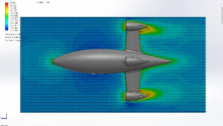

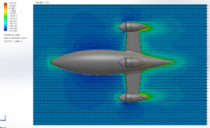
Where the drag is
At 550 km/h the dynamic pressure is about 13,600 Pa, close to 2 psi on every forward facing surface. Total drag in the model is 20.5 N, an equivalent drag area of 15.1 cm².
The four motor nacelles make more drag than the whole body. That is why so much of the design work went into their shape.
| Source | Drag at 550 km/h | Share |
|---|---|---|
| Motor nacelles (4) | 8.69 N | 42% |
| Body skin friction | 5.96 N | 29% |
| Arms (4) | 3.45 N | 17% |
| Fins (4) | 1.27 N | 6% |
| Lift induced and prop normal force | 1.19 N | 6% |
| Total | 20.5 N |
Body shape
For the second version I rebuilt the CAD around parametric curves and global variables, so I could test many shapes without remodeling. The body is a NACA 00XX profile spun into a body of revolution, and the arms use the same profile family in cross section.
I compared it against my original hand drawn spline and against a Sears-Haack body. The Sears-Haack body had more skin friction drag. It minimizes wave drag, which only matters near the speed of sound, so it has no advantage at this speed.

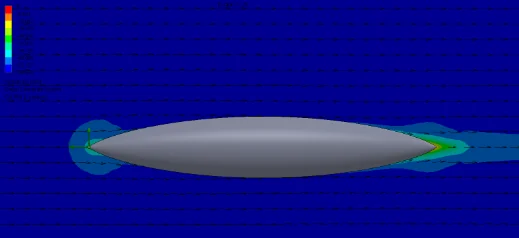

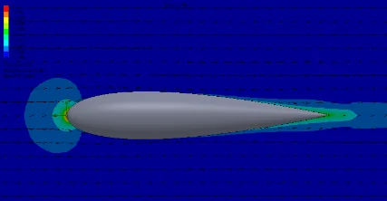
Arm geometry
I ran an 80 case Flow Simulation sweep over arm chord, thickness and velocity and analyzed it in MATLAB. Over the tested ranges, chord accounts for 62% of the variation in force along the flow direction and thickness for 38%.

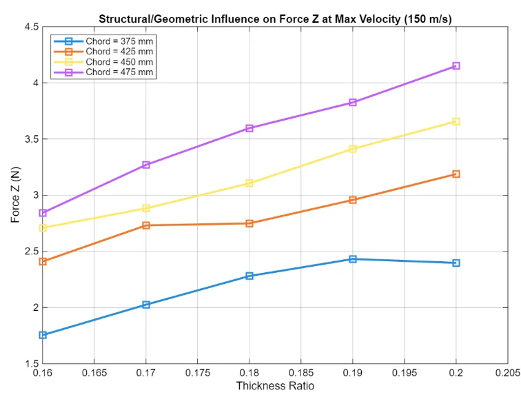

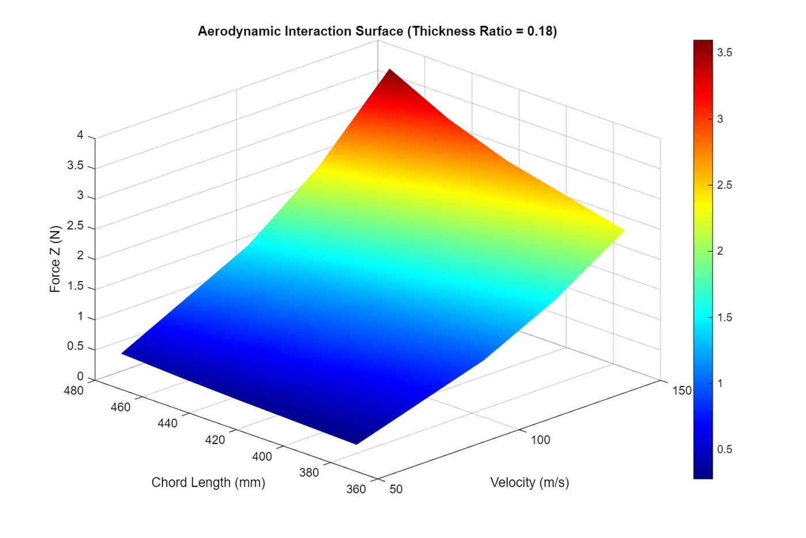
Stability and trim
Passive stability needs the center of pressure behind the center of mass. Moving the arms forward moved the center of pressure back by 3%, and small tail fins added another 2.2%. Angle of attack also moves the center of pressure, so I aimed for stability across the whole range instead of at one point.
A fin sizing run predicted that the trim moment needed at top speed drops from 1.81 N·m to about 0.04 N·m, with 0.95 N·m available from the props. That is one trim point, not a full stability study.
I first tried to make the body lift enough to hold altitude on its own. I dropped that goal, because losing some height on the pass is fine as long as the aircraft stays controllable.

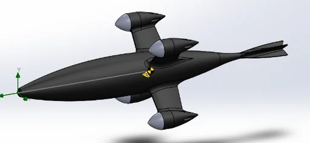

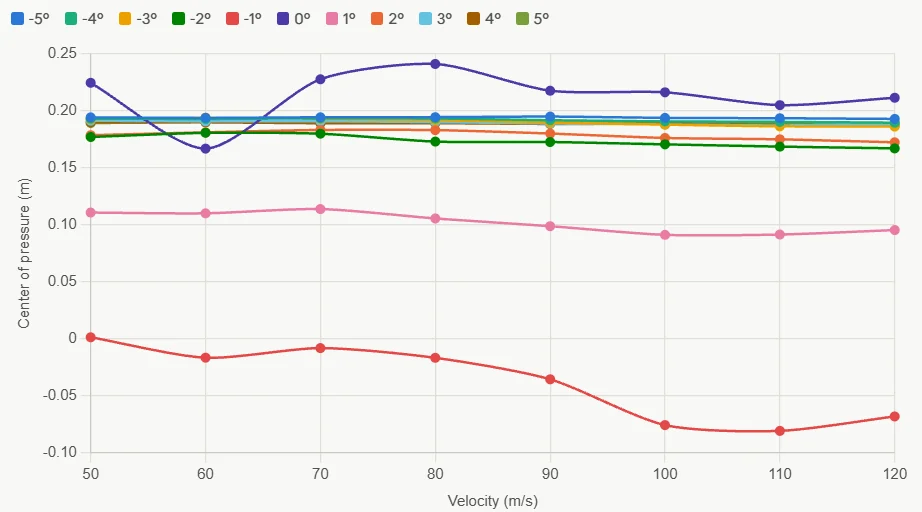
Cooling the ESCs
A NACA duct in the shell brings air past the ESCs and vents it out of the tail. I derived a parametric equation for the duct outline in Desmos so it scales with one width variable, then ran CFD to check that the cooling was worth its drag.

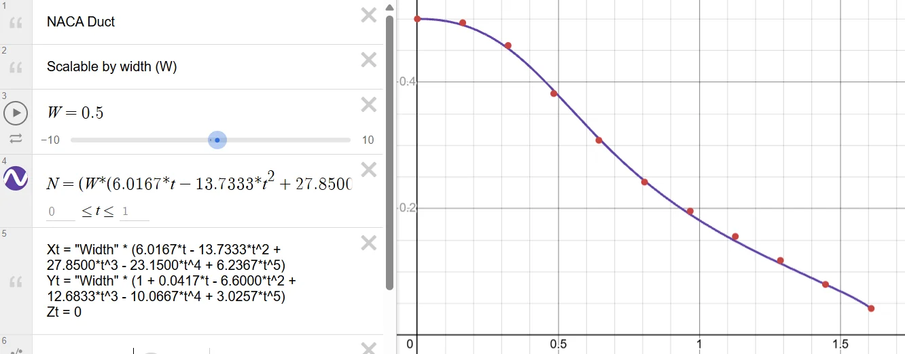
Shell material
Model results.
I compared carbon fiber nylon (PA6-CF) against PETG in a linear static FEA with the same mesh, changing only the material. Printed parts are weakest across their layers, so I compared the materials in that direction. PA6-CF screens at 3.3 across the layers against 1.5 for PETG, and it is 5% lighter.
Load case
68.65 N per motor along each motor axis, about 11 times the aircraft's weight in total, or 2.8 times per motor. The fuselage is fixed and the nacelles are bonded, which makes the model stiffer than the real part.
How the last row is reached
Nominal strength across the layers gives 5.9 and 2.88. The datasheet low bound gives 5.2 and 2.38. An assumed factor of 0.64 for infill, humidity and temperature brings that to 3.3 and 1.5. Dividing a directional strength by a peak von Mises stress screens materials. It doesn't analyze the layer interface itself.
| PA6-CF | PETG HF | |
|---|---|---|
| Peak von Mises stress | 8.13 MPa | 8.00 MPa |
| Maximum displacement | 0.093 mm | 0.226 mm |
| Factor of safety, in plane | 12.6 | 4.25 |
| Across layers, nominal | 5.9 | 2.88 |
| Across layers, low bound | 5.2 | 2.38 |
| Low bound after knockdown | 3.3 | 1.5 |
A ratio of 3 to 5 across the layers is my own screening target, not a standard. Nothing has been physically tested against this model, and there's no mesh convergence study at the wing root yet.

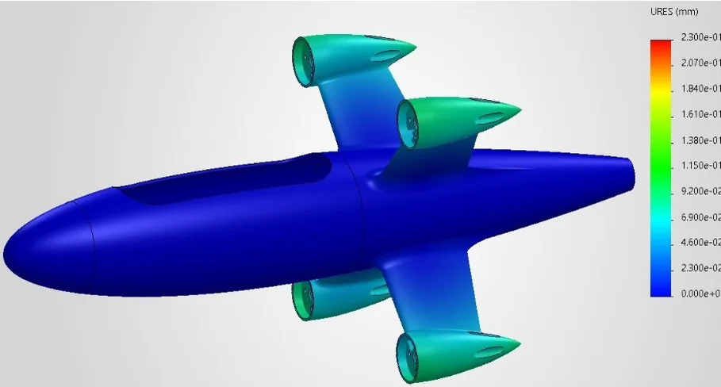

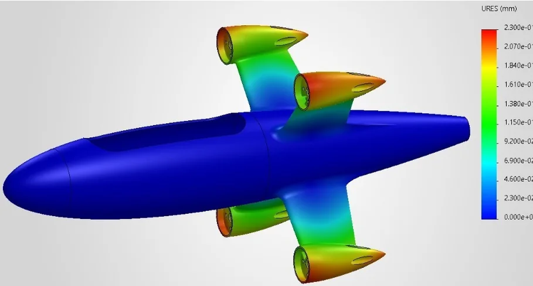

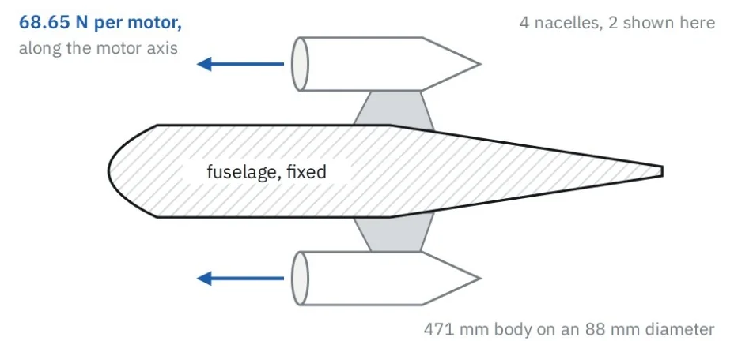
Version 1
Model results. The weight is assumed at 1.2 kg until I weigh the aircraft.
Version 1 is the quadcopter that has flown. It runs a 6S 4000 mAh pack, 2807 1400 KV motors and 7×4 props, and it is built for efficiency and endurance rather than speed. The same physics governs both versions, but the limit that matters moves.
The prop still sets top speed
A 7×4 prop has a low pitch, so pitch speed caps the aircraft long before power does. In the model, sweeping the weight from 1.0 to 1.5 kg and the drag area from 0.008 to 0.013 m² only moves top speed between about 132 and 145 km/h. On version 2 the limit is the prop's RPM rating. On version 1 it is pitch, then tip Mach, then motor heat.
Hover power and disc area
In hover each prop pushes air down, and conservation of momentum gives the ideal power as thrust to the 3/2 divided by the square root of 2ρA, where A is the disc area. Power falls as the disc gets bigger, so going from 5 in to 7 in props cuts ideal hover power by about 29% at the same weight.
| Hover at 1.2 kg | 5 in props | 7 in props |
|---|---|---|
| Total disc area | 0.051 m² | 0.099 m² |
| Induced velocity | 9.7 m/s | 7.0 m/s |
| Ideal power | 115 W | 82 W |
| Electrical power | 255 W | 182 W |
| Current at 22.2 V | 11.5 A | 8.2 A |
| Hover time on 71 Wh usable | 17 min | 23 min |
Sea level air, a figure of merit of 0.6 for the props and 75% for the motor and ESC together.
Why bigger props make hotter motors
Thrust goes as RPM squared times diameter to the fourth, so at the same thrust a 7 in prop spins about 49% slower than a 5 in prop. Torque goes up by the diameter ratio, about 40%, and motor current goes up with torque. Resistive loss in the windings goes as current squared, so it almost doubles, at half the RPM, where the motor's spinning bell cools it least. The bigger props save power overall and still put more heat into the motor.
The same reasoning is why version 2 runs 12S. Higher voltage lets a lower KV motor reach the RPM, which means more torque per amp, less current, and a quarter of the resistive loss for every halving of current.
Flight logs from version 1
Measured, from ArduPilot log 83.
Nothing goes into the printed shell until it has flown on version 1. I built and wired it, set up ArduPilot on a Pixhawk, and added a Walksnail FPV camera on its own power supply with its RX and TX lines run to the Pixhawk on a common ground. It has about an hour of flights so far.

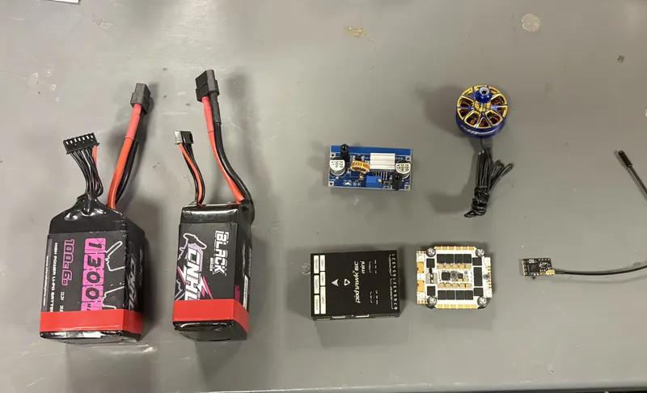

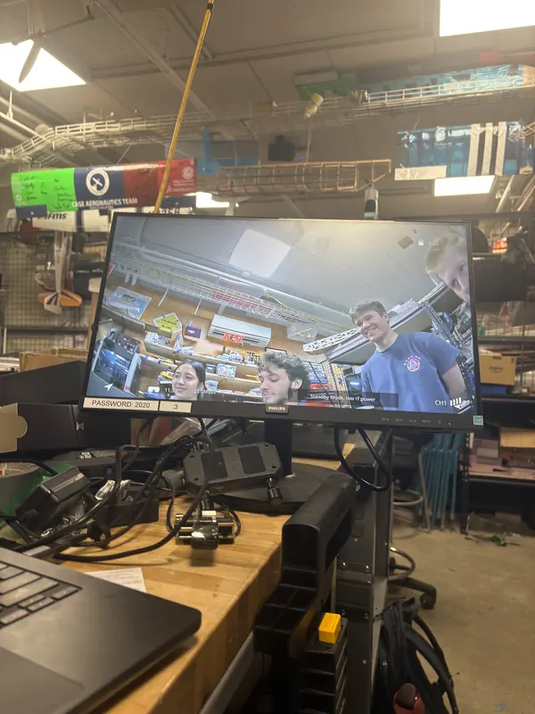
1. The symptom
A 12 Hz roll oscillation blocked two AutoTune attempts.
2. Seeing it
The default log rate was far too slow to resolve 12 Hz, so the oscillation folded down to a lower apparent frequency. I turned on rate logging at 400 Hz, about 33 samples per cycle.
3. The cause
The gyro low pass filter defaulted to 20 Hz. A two pole Butterworth filter at 20 Hz adds 53° of phase lag at 12 Hz. That is a calculated filter response, not a measured phase margin.
4. The change
I raised the cutoff to 80 Hz, which cuts the lag at 12 Hz to 12°, and retuned the rate gains. I changed both at once, so this log can't separate their effects.
In a feedback loop, lag turns a correction into an overshoot. When the total lag around the loop reaches 180° at a frequency where the loop still has a gain above one, the loop oscillates at that frequency.

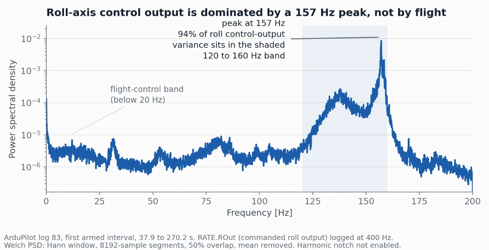
What the log shows
At the 80 Hz setting, the 9 to 16 Hz band holds 0.25% of the roll control output variance. That comes from one log, not a before and after pair. AutoTune still didn't finish. There were 162 pilot overrides across the 174 second attempt, and no progress on the roll rate D gain.
What is still in the way
The 120 to 160 Hz band holds 94% of the roll control output variance, peaking at 157 Hz. The log has no motor speed telemetry, so I can't yet say what drives it. Median vertical vibration was 38 m/s², above the 30 m/s² where ArduPilot flags a concern. I've specified a harmonic notch filter but haven't flown it yet.

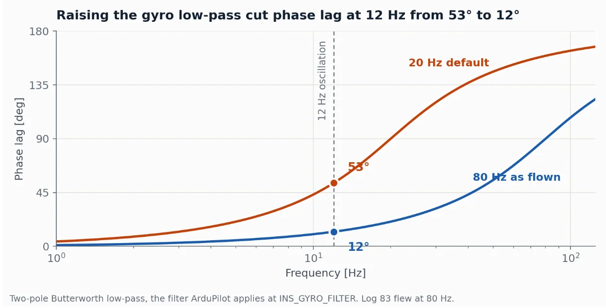

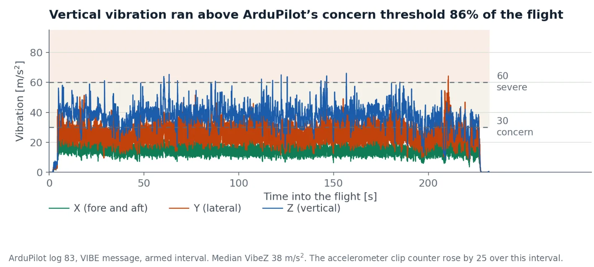
No before and after number yet
I haven't compared this log against the pre-fix log to a stated method, so I'm not claiming an improvement percentage. A fair comparison needs both logs, matched time windows and flight modes, the filter and gain settings in each, and one stated metric. Down sampling the new log to the old rate doesn't count, because it can't recover what the old log missed.
Log 83 runs 393 s with two armed intervals. The spectrum uses the first, 37.9 to 270.2 s. Control rates were logged at 400 Hz and gyro batches at 2,013 Hz. Band figures are Welch power spectral density with a Hann window, 8192 sample segments, 50% overlap and the mean removed. Each percentage is the band integral over the whole spectrum.
Next
Fly the notch filter on version 1 and record a proper before and after pair. Then move the electronics into the shell, confirm the motor's 12S rating with the manufacturer, and look at heat sinking the ESCs, since better cooling would let the duct and the shell around it get smaller.